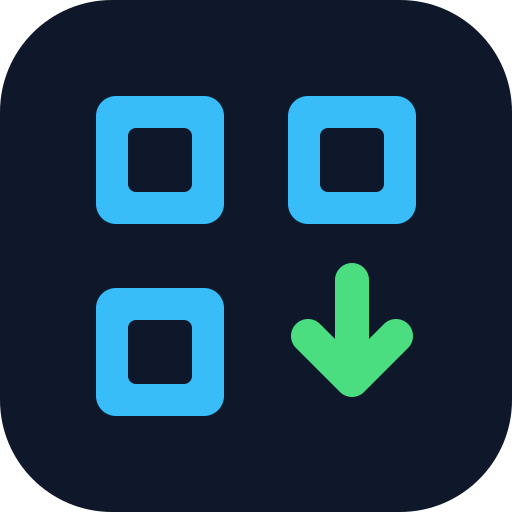

QRDrop
QRを1回読むだけで、端末どうしを直接つなぐ
- 1どちらか1台（PCならPC）で「接続を開始」
- 2もう1台のスマホの標準カメラでQRを読む
- 3自動でつながります。送信・受信はどちらからでもOK
詳細設定
受信データの一時保存：確認中…途中で切れたファイルを続きから受け取るために保存しています
相手のQRを読み取る
カメラを起動しています…
相手の画面を明るくして、10〜20cmの距離でかざしてください
コードを貼り付ける
接続中相手と同じ数字なら安全
ここにドラッグ＆ドロップ・Ctrl+Vで貼り付けても送れます
ファイルは端末どうしで直接・暗号化して送信。サーバーには保存されません。
仕組みとソースコード